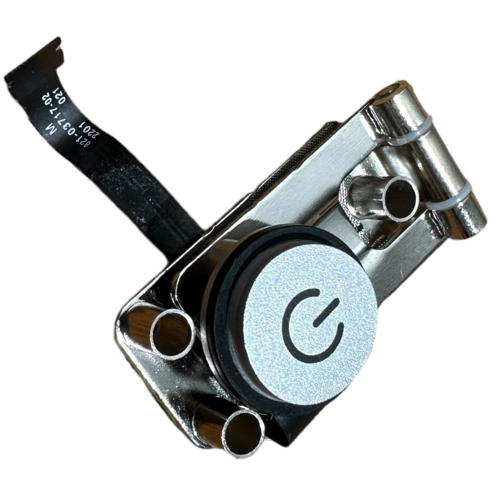
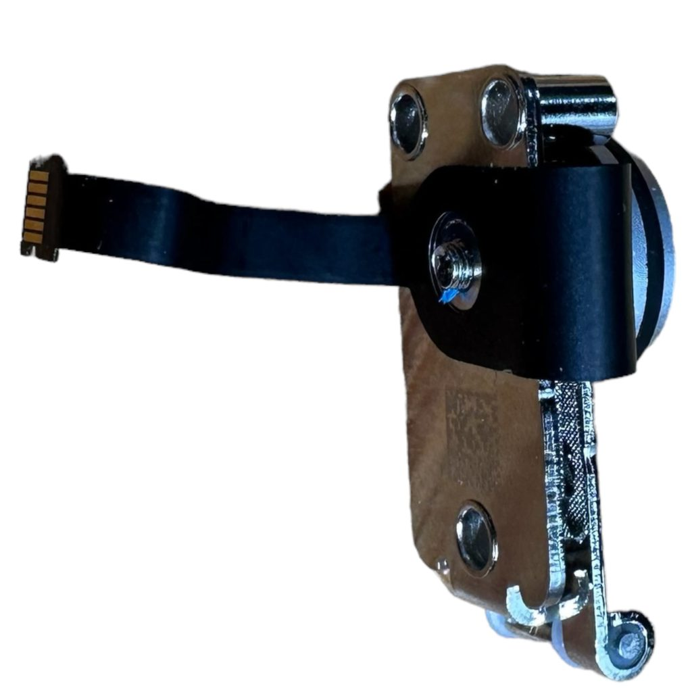
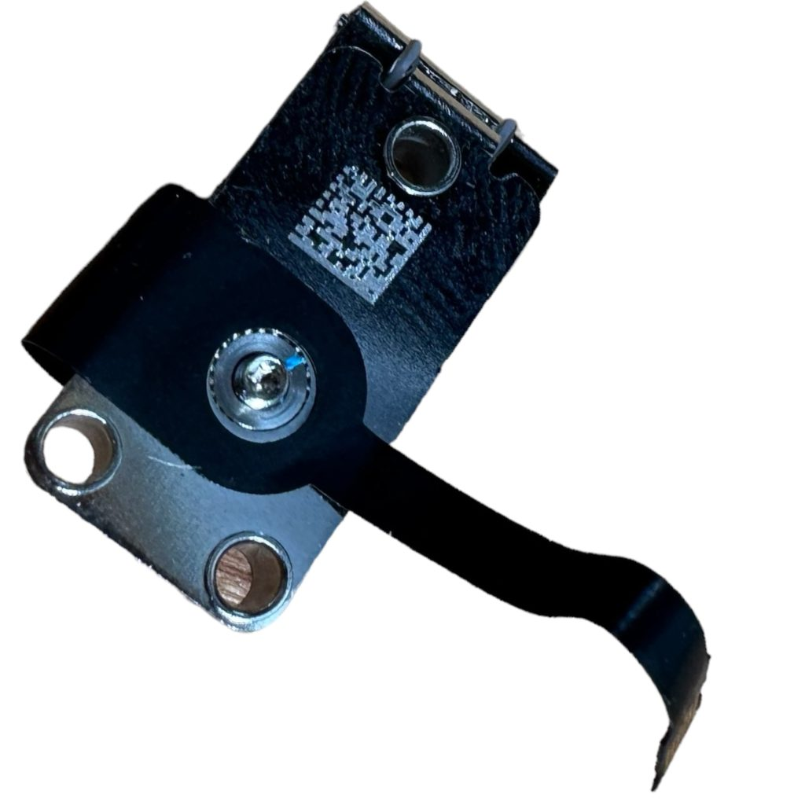

Power Button Design Mac Studio, 2022



Background
I owned the design of the first Mac Studio's front indicator light and power button from prototyping through mass production.
Problem statement
The button follows the spline corner surface. This made good gap/offsets, as well as a consistent feel and travel, difficult.
Design process
- Quantified button metrics, including click ratio, peak force, and dead zone.
- Explored typical and novel button hinge mechanisms: living hinges, diving boards, and button with foam.
- Built mockups of different button designs using quick-turn parts for ID feedback and collaboration.
- Created stoplight charts comparing button metrics, cost, assembly complexity, and reliability performance.
Result
Button metrics and ID feedback beat previous programs with complex spline geometry. Gap and offset still matched the expectations set by previous Mac programs.
Colored Enclosure Design MacBook Neo, 2026
Background
I owned the MacBook Neo display enclosure from prototyping to mass production. Backlights on conventional LCDs use a unidirectional LED strip that reflects off the enclosure surfaces. Laser darkening or CNC machining is conventionally used to neutralize the color effects from the enclosure anodization.
Problem statement
XVT build units showed that the yellow systems exhibited a yellow line near the top of the display when showing a white background.
Design process
- Quantified reflectance of enclosure colors across multiple wavelengths.
- Identified discrepancies in anodization response to the laser darkening process.
- Determined optimal darkening levels per enclosure anodization color to minimize laser darkening cycle time.
- Developed and implemented a quality control process to avoid laser machine process drift and enclosure process escapes.
Result
Cost-optimized laser darkening profiles unique to each enclosure color, with a plaque-based method for monitoring laser machine capability and process drift.